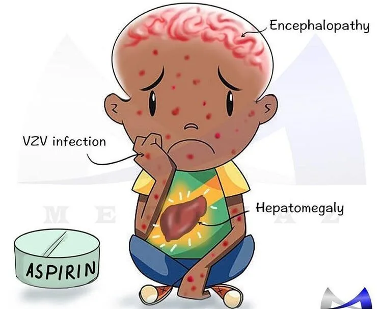
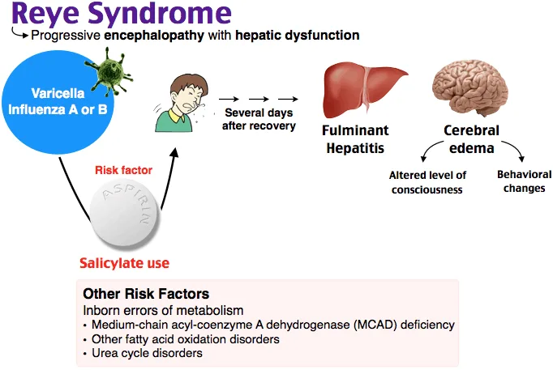
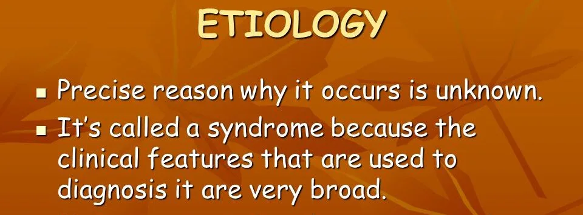
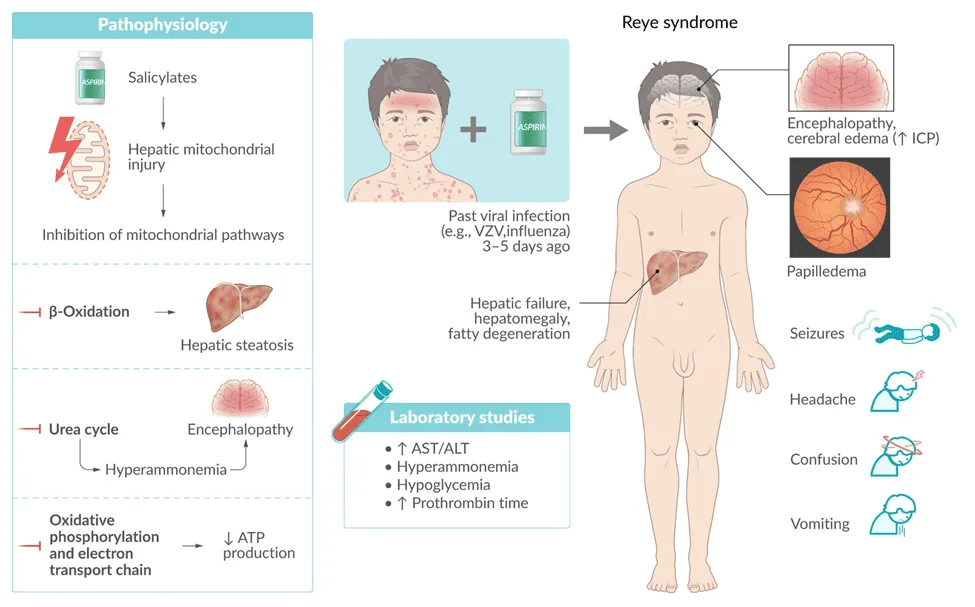
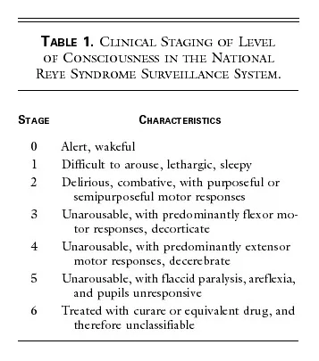

Expanded Nursing Uganda Explanation
Reyes syndrome should be understood beyond a short definition. Link the concept to patient history, focused assessment, common risks, nursing priorities, documentation and evaluation of outcomes.
01 REYE’S SYNDROME
Reye’s syndrome is characterized by acute noninflammatory encephalopathy and fatty degenerative liver failure . I.e It is characterized by swelling in the liver and brain.
Reye’s syndrome commonly affects children recovering from viral infection, most commonly flu or chickenpox.
02 Pathogenesis
- Viral Infection : Reye’s syndrome often occurs during the recovery phase of a viral infection, such as the flu or chickenpox. The initial viral infection sensitizes the body, making it more susceptible to the subsequent development of Reye’s syndrome.
- Mitochondrial Dysfunction : It is believed that Reye’s syndrome involves mitochondrial injury, leading to dysfunction in oxidative phosphorylation and fatty acid beta-oxidation. Mitochondria are responsible for producing energy in cells, and their dysfunction disrupts normal cellular processes.
- Fatty Acid Accumulation : In Reye’s syndrome, there is an abnormal accumulation of fatty acids in various organs, including the liver and brain. This accumulation is thought to be a result of impaired fatty acid metabolism due to mitochondrial dysfunction.
- Disruption of Metabolic Processes : The accumulation of fatty acids and the dysfunction of mitochondrial energy production disrupt normal metabolic processes in the body. This can lead to a decrease in blood sugar levels, an increase in ammonia and acid levels in the blood, and swelling in organs such as the brain and liver
03 Causes of Reye’s Syndrome
The exact cause of Reye’s syndrome is still unknown , but several factors have been linked to its development.
- Use of Salicylates, Particularly Aspirin : The use of a type of medicine known as salicylates, especially aspirin, in young people and children under 16 has been strongly associated with Reye’s syndrome. Aspirin has been linked to the onset of Reye’s syndrome, particularly when used during or after a viral infection such as the flu or chickenpox.
- Underlying Metabolic Disorders: Individuals with a fatty acid oxidation disorder are more likely to develop Reye’s syndrome when exposed to aspirin during a viral illness.
- Viral Infections : Reye’s syndrome often occurs during the recovery phase of a viral infection, such as the flu or chickenpox.
- Other Factors : Exposure to certain toxins(aflatoxins), and insecticides, herbicides, and paint thinner, may produce symptoms similar to Reye’s syndrome, but they do not cause the syndrome itself.
04 Clinical Features of Reye’s syndrome
Initial Signs and Symptoms: For children younger than age 2, the first signs of Reye’s syndrome may include;
- Diarrhea
- Rapid breathing
For older children and teenagers, early signs and symptoms may include;
- Persistent or continuous vomiting
- Unusual sleepiness or lethargy
- Anorexia (loss of appetite)
Additional Signs and Symptoms: As the condition progresses, signs and symptoms may become more serious, including;
- Irritable, aggressive, or irrational behavior
- Confusion, disorientation, or hallucinations
- Weakness or paralysis in the arms and legs
- Seizures
- Excessive lethargy
- Decreased level of consciousness
- Hepatomegaly (enlargement of the liver)
- Decerebration (elimination of cerebrum function in humans)
- Papillary changes
- Rapidly developing coma
05 Laboratory Investigations
- There may be some degree of hypoglycemia with low levels of glucose in the cerebrospinal fluid.
- Serum ammonia levels are elevated. (normal 40-80 mcg/dl)
- Prothrombin time is prolonged
- Hepatic enzymes are increased.
- Liver biopsy shows fatty change and glycogen depletion but no necrosis of the liver cells.
- EEG shows generalized slow waves.
NB: Reye syndrome should be suspected in any child exhibiting the acute onset of an encephalopathy (without known heavy metal or toxin exposure) and pernicious vomiting.
06 Hurwitz classification of Reyes Syndrome
The stages used in the CDC classification of Reye’s syndrome are as follows:
Stage 0: Alert
- Abnormal history and laboratory findings consistent with Reye’s syndrome
- No clinical manifestations
Stage 1: Mild Symptoms
- Vomiting
- Sleepiness
- Lethargy
Stage 2: Moderate Symptoms
- Restlessness
- Irritability
- Combativeness
- Disorientation
- Delirium
- Tachycardia (rapid heart rate)
- Hyperventilation (rapid breathing)
- Dilated pupils with sluggish response
- Hyperreflexia (exaggerated reflexes)
- Positive Babinski sign (toes flex upward when sole of foot is stimulated)
- Appropriate response to noxious stimuli (painful stimuli)
Stage 3: Severe Symptoms
- Obtunded (decreased alertness)
- Comatose
- Decorticate rigidity (abnormal posture with arms flexed and legs extended)
- Inappropriate response to noxious stimuli
Stage 4: Critical Symptoms
- Deep coma
- Decerebrate rigidity (abnormal posture with arms and legs extended)
- Fixed and dilated pupils
- Loss of oculovestibular reflexes (no response to cold water in the ear)
- Dysconjugate gaze with caloric stimulation (eyes do not move together in response to cold water in the ear)
Stage 5: Life-Threatening Symptoms
- Seizures
- Flaccid paralysis (loss of muscle tone)
- Absent deep tendon reflexes (DTRs)
- No pupillary response
- Respiratory arrest
Stage 6: Unclassifiable
- Patients who cannot be classified because they have been treated with curare or another medication that alters the level of consciousness
07 Medical Management of Reye’s Syndrome:
No specific treatment exists for Reye syndrome , and management is primarily focused on providing supportive care based on the stage of the syndrome.
Stage 0-1:
- Keep the patient quiet and frequently monitor vital signs and laboratory values.
- Correct fluid and electrolyte abnormalities, hypoglycemia, and acidosis.
- Maintain electrolytes, serum pH, albumin, serum osmolality, glucose, and urine output within normal ranges.
- Consider restricting fluids to two-thirds of maintenance to avoid overhydration, which may precipitate cerebral edema.
- Use colloids, such as albumin, as necessary to maintain intravascular volume.
Stage 2:
- Continuous cardiorespiratory monitoring is the standard of care.
- Place central venous lines or arterial lines to monitor hemodynamic status.
- Use urine catheters to monitor urine output.
- Perform an electrocardiogram (ECG) to monitor cardiac function.
- Perform an electroencephalogram (EEG) to monitor seizure activity.
- Prevent increased intracranial pressure (ICP) by elevating the head to 30°, keeping the head in a midline orientation, using isotonic fluids instead of hypotonic fluids, and avoiding overhydration.
Stages 3-5:
- Continuously monitor intracranial pressure (ICP), central venous pressure, arterial pressure, or end-tidal carbon dioxide.
- Consider endotracheal intubation if the patient is not already intubated.
Urea cycle disorder treatment agents:
- Ammonia detoxicants are used to treat hyperammonemia in Reye’s syndrome.
- Sodium phenylacetate-sodium benzoate is approved by the FDA for the treatment of hyperammonemia due to urea-cycle defects.
Antiemetic agents:
- Antiemetic agents such as ondansetron are administered to decrease vomiting, especially during the initiation of sodium phenylacetate-sodium benzoate therapy.
Drugs to avoid
Barbiturates
- Diazepam (Valium) and other benzodiazepines (antianxiety, muscle-relaxant, and sedative)
- Antiepileptics
- Acetaminophen (paracetamol)
- Indomethacin (used to treat fever, pain, stiffness, and swelling)
Nursing Assessment:
- Stage 1: Lethargy, vomiting, and hepatic dysfunction.
- Stage 2: Hyperventilation, hyperactive reflexes, delirium, and hepatic dysfunction.
- Stage 3: Coma, decorticate rigidity, hyperventilation, and hepatic dysfunction.
- Stage 4: Deepening coma, large fixed pupils, decerebrate rigidity, and minimal hepatic dysfunction.
- Stage 5: Seizures, flaccidity, loss of deep tendon reflexes, and respiratory arrest.
Nursing Diagnosis:
- Deficient fluid volume related to failure of regulatory mechanism.
- Ineffective cerebral tissue perfusion related to diminished arterial or venous blood flow and hypovolemia.
- Risk for trauma related to generalized weakness, reduced coordination, and cognitive deficits.
- Reduced breathing pattern related to decreased energy and fatigue, cognitive impairment, tracheobronchial obstruction, and inflammatory process.
Nursing Care Planning and Goals:
- Maintain adequate ventilation.
- Maintain a normal respiratory status, as evidenced by a normal respiratory rate.
- Maintain orientation to the environment without evidence of deficit.
- Maintain skin integrity.
- Maintain joint mobility and range of motion.
Nursing Interventions:
- Check oxygenation status.
- Monitor ICP (intracranial pressure).
- Monitor blood glucose levels.
- Assess fluid intake and output.
- Assess cardiac, respiratory, and neurologic status.
- Assess pulmonary artery catheter pressures.
- Keep the head of the bed at a 30-degree angle.
- Maintain seizure precautions.
- Provide oxygen therapy.
- Administer medications as ordered.
- Administer blood products as ordered.
- Check for loss of reflexes and signs of flaccidity.
- Monitor the patient’s temperature.
- Provide postoperative care if necessary.
- Prevent impaired skin integrity.
- Support the patient and the family
08 Complications
Electrolyte and fluid disturbances:
- Electrolytes: Minerals in your body that carry an electric charge, essential for nerve and muscle function, fluid balance, and many other bodily processes.
- Fluid disturbances: Imbalances in the amount of water in your body, which can be caused by dehydration, overhydration, or electrolyte problems.
Increased intracranial pressure (ICP):
- ICP: Pressure inside the skull, caused by swelling of the brain, bleeding, or other factors. High ICP can compress brain tissue and damage it.
Diabetes insipidus (DI):
- DI: A condition where the body cannot concentrate urine properly, leading to excessive urination and dehydration. This happens because the body doesn’t produce enough antidiuretic hormone (ADH), which helps reabsorb water from the kidneys.
Syndrome of inappropriate ADH secretion (SIADH):
- SIADH: A condition where the body produces too much ADH, leading to water retention and fluid overload. This can cause confusion, seizures, and other problems.
Hypotension:
- Hypotension: Low blood pressure, which can occur due to dehydration, heart problems, or other factors. It can cause dizziness, fainting, and even organ damage.
Arrhythmias:
- Arrhythmias: Irregular heartbeats, which can be caused by heart disease, electrolyte problems, or other factors. They can lead to dizziness, shortness of breath, and even heart failure.
Pancreatitis:
- Pancreatitis: Inflammation of the pancreas, which can be caused by gallstones, alcohol abuse, or other factors. It can lead to severe abdominal pain, nausea, and vomiting.
Respiratory insufficiency:
- Respiratory insufficiency: Difficulty breathing, which can be caused by lung disease, heart failure, or other factors. It can lead to shortness of breath, fatigue, and even death.
Hyperammonemia:
- Hyperammonemia: High levels of ammonia in the blood, which can be caused by liver failure, genetic disorders, or other factors. It can lead to confusion, coma, and even death.
Aspiration pneumonia:
- Aspiration pneumonia: An infection in the lungs caused by inhaling food, vomit, or other materials. It can be serious, especially in people with weakened immune systems.
Poor temperature regulation:
- Poor temperature regulation: Difficulty maintaining a stable body temperature, which can be caused by infections, medication, or other factors. It can lead to heat stroke or hypothermia.
Uncal herniation:
- Uncal herniation: A serious complication of increased intracranial pressure where brain tissue is squeezed through a small opening in the skull, which can damage the brain stem and be fatal.
Cumulative Exam: https://midwivesrevisionuganda.com/paediatrics-cumulative-test/
09 Nursing Uganda Clinical Lens
Use Reyes syndrome as a practical nursing topic, not only a memorized definition. Adapt assessment and care to age, weight, development, caregiver knowledge and family support.
- What to understand first: define reyes syndrome, identify the normal or expected pattern, then explain what changes when the patient is unwell.
- Why it matters in care: the nurse must recognize risk early, explain findings clearly, document accurately and know when to escalate.
- How to revise it: connect each point to assessment, nursing diagnosis or care problem, intervention, rationale and evaluation.
10 Assessment Guide
- Airway, breathing, circulation, hydration, temperature, feeding, activity and danger signs.
- Weight-based medicines, immunization status, growth, development and caregiver concerns.
- Signs that may be subtle in children, including lethargy, poor feeding, fast breathing or convulsions.
11 Nursing Priorities, Rationales and Outcomes
- Use age-appropriate communication and involve the caregiver.
- Prevent dehydration, hypothermia, medication errors and delayed referral.
- Teach home care, danger signs and follow-up clearly.
The rationale for these priorities is patient safety: nursing actions should prevent deterioration, reduce discomfort, support recovery and create clear evidence for the next caregiver.
- Expected outcome: The child is clinically improving, caregiver instructions are understood and follow-up is arranged.
12 Patient Teaching and Revision Check
- Explain reyes syndrome in simple language the patient or caregiver can repeat back.
- Teach warning signs, medicine or follow-up instructions, hygiene or lifestyle points where relevant.
- For exams, prepare a short answer using: definition, causes or risk factors, signs, assessment, management, complications and prevention.
- For ward practice, document baseline findings, actions taken, patient response and the plan for review.
Illustrations and Diagrams (6)






Related Video Lectures
Watch nursing lecture videos on YouTube for this topic. Opens in a new tab.
Watch on YouTubeExternal link: YouTube may use its own cookies and terms. Nursing Uganda is not affiliated with YouTube.